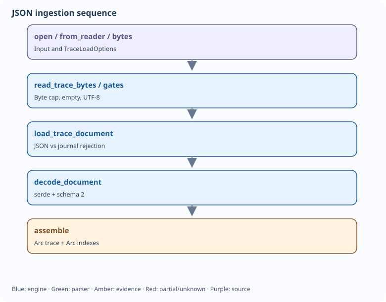
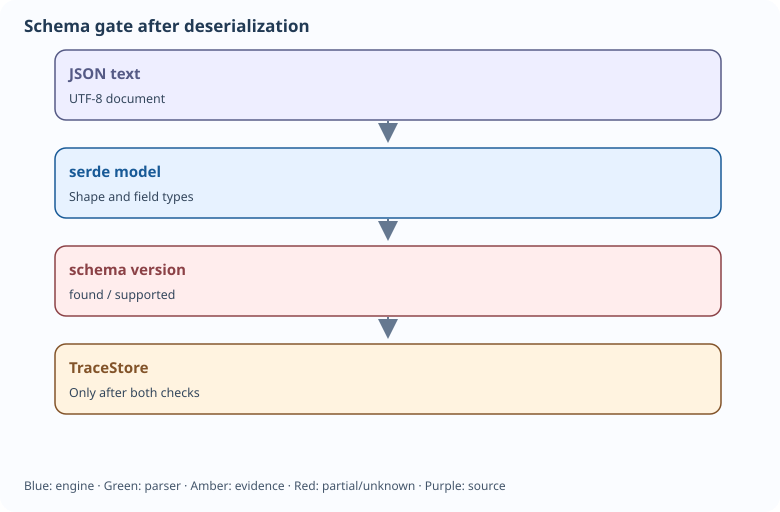
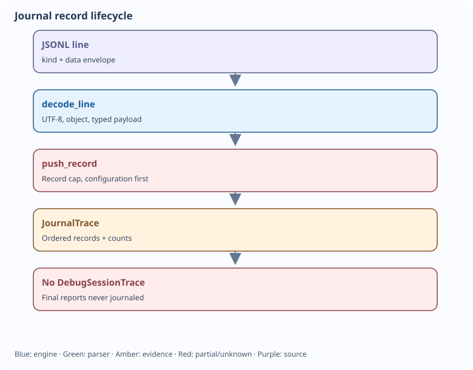
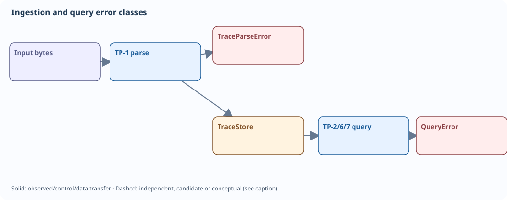

47 · Trace Parser ingestion and schema gating #
Key terms #
| Term | Plain meaning |
|---|---|
| Decode | Parse JSON text into Rust's saved-trace types after input and schema checks. |
| Gate | A check that rejects something too large, malformed, journal-shaped or from an unsupported schema before it is trusted as a full trace. |
>
The big picture #
The parser starts with bytes, not a live engine session. TP-1 decides whether those bytes are a schema-2 DebugSessionTrace document, applies resource gates, and constructs one immutable canonical store. It also exposes a separate journal reader for the engine's JSONL record stream. The two paths deliberately do not merge: a journal cannot supply final reports and computed state that only exist in a complete exported trace.
src/trace_parser/mod.rs: loading and assembly #
Principal signatures:
pub fn open(path: impl AsRef<Path>, options: TraceLoadOptions) -> Result<TraceStore>(src/trace_parser/mod.rs:240-258)pub fn from_reader(reader: impl BufRead, options: TraceLoadOptions) -> Result<TraceStore>(:264-295)pub fn from_json_bytes(bytes: impl AsRef<[u8]>, options: TraceLoadOptions) -> Result<TraceStore>(:301-325)pub fn from_trace(trace: DebugSessionTrace) -> Result<TraceStore>(:331-352)fn assemble(trace: DebugSessionTrace, source: TraceSourceMetadata) -> Self(:216-230)
open and from_reader call read_trace_bytes, which rejects an input larger than options.max_bytes (:232-238). from_json_bytes does not read options.format: it applies the byte limit, runs content gates, decodes JSON, and always constructs a store. open/from_reader dispatch through load_trace_document, which accepts JSON, rejects journal-shaped input with JournalReconstructionUnsupported, and never silently reconstructs a journal (:973-995). gates rejects empty/whitespace-only bytes and non-UTF-8 input before dispatch (:990-995).
assemble is the ownership boundary:
let indexes = TraceIndexes::build(&trace);
TraceStore {
trace: Arc::new(trace),
indexes: Arc::new(indexes),
source,
}(src/trace_parser/mod.rs:222-229). Index construction borrows the trace, then the trace and indexes become two separately shared Arcs. No record vector is cloned and no per-query index is rebuilt. from_trace takes an already constructed model, validates only its schema version, and then assembles. It does not call validate_deep.
Loading order #
- Check size.
- Reject empty or non-UTF-8.
- Decode JSON and validate schema.
- Build compact indexes.
- Store the canonical trace and indexes behind Arcs.
- Return a cheap-to-clone handle.
Deep validation is a separate explicit operation (TraceStore::validate_deep, :406-408), and semantic validation is requested separately by validated_semantic().
src/trace_parser/json.rs: document decode #
Signatures: pub(crate) fn decode_document(text: &str) -> Result<DebugSessionTrace> (src/trace_parser/json.rs:19-29), pub(crate) fn validate_schema_version(trace: &DebugSessionTrace) -> Result<()> (:32-46), pub(crate) fn detect_format(text: &str) -> DetectedFormat (:48-67).
decode_document first uses serde to deserialize the existing DebugSessionTrace model, preserving the model's optional/additive V2.1/V2.2 fields, then calls the schema gate. A serde error becomes MalformedJson; a non-2 schema version becomes UnsupportedSchemaVersion. JSON object key order and whitespace are irrelevant. The parser never accepts a legacy removed required field merely because it is numerically similar.
detect_format classifies complete JSON documents and journal-shaped text. It is content-based, not filename-based. A malformed final journal-shaped line can be classified as a journal candidate even if newline-terminated; the later typed journal parser still rejects that record. The detector is therefore a dispatch aid, not proof that the journal is valid.
src/trace_parser/journal.rs: typed JSONL records #
Principal signatures:
pub(crate) fn parse_bytes(bytes: &[u8], options: &TraceLoadOptions) -> Result<JournalTrace>(src/trace_parser/journal.rs:142-149)pub(crate) fn parse_reader(mut reader: impl BufRead, options: &TraceLoadOptions) -> Result<JournalTrace>(:156-230)fn push_record(...) -> Result<()>(:234-267)fn decode_line(...) -> Result<Option<JournalRecord>>(:270-361)
JournalRecord preserves configuration, checkpoints, allocations, gaps, disassembly, instruction events, finalized markers, and optional unknown records in file order (:46-68). JournalTrace adds per-kind counts, a finalized flag, a torn_tail flag, and the physical line count (:108-122). It is evidence in recorded order, not a DebugSessionTrace.
parse_reader buffers one line at a time and bounds a single record by options.max_bytes (:167-174). If a final line lacks a newline, it is accepted only when it fully decodes; otherwise it becomes torn_tail and is never interpreted (:180-207). push_record enforces max_journal_records and requires the first record to be configuration (:242-254). decode_line validates UTF-8, JSON object shape, string kind, and typed payload (:275-361).
A concrete journal row #
This is an illustrative record shape, not captured output:
{"kind":"allocation","data":{"observed_at_stop":7,"event":{"event_type":"Allocated","allocation_id":1,"pid":100,"sequence":4,"address":"0x55d0a0002a10","size_bytes":32}}}The parser returns JournalRecord::Allocation { observed_at_stop: 7, event }. It does not infer that this allocation happened exactly at stop 7; the stop is the recorder's observation marker. parse_journal, parse_journal_bytes, and parse_journal_reader are public wrappers around this path (src/trace_parser/mod.rs:926-962).
src/trace_parser/error.rs: failure categories #
TraceParseError separates input failure from query failure (src/trace_parser/error.rs:17-119): source wrapping, I/O, empty input, size limit, invalid encoding, malformed JSON, unrecognized format, unsupported schema, invalid trace, malformed/unsupported journal records, journal record limit, unsupported reconstruction, and missing journal configuration. File entry points wrap inner failures in Source { path, source } so the originating input remains visible.
QueryError is a different type (:139-218): page limit, foreign trace, out-of-range position, invalid half-open range, unresolvable reference, unavailable evidence, and ordering violation. Ingestion success therefore does not imply query success. A partial execution is recorded data, not a TraceParseError.
Tests and boundaries #
tests/trace_parser.rs covers file/reader/byte loading, schema rejection, format selection, journal fixtures and malformed inputs; tests/fixtures/journal/{calloc_demo_dual,finite_loop_dual}.jsonl exercise typed record streams. TraceLoadOptions::default() caps JSON input at 512 MiB and journals at two million records (src/trace_parser/mod.rs:141-184). Those limits do not bound an already assembled parser process. The engine's separate JSON export cap does not become a parser input guarantee.
Diagram notes #
JSON ingestion sequence #


Schema gate #


Journal record lifecycle #


Ingestion error classes #

